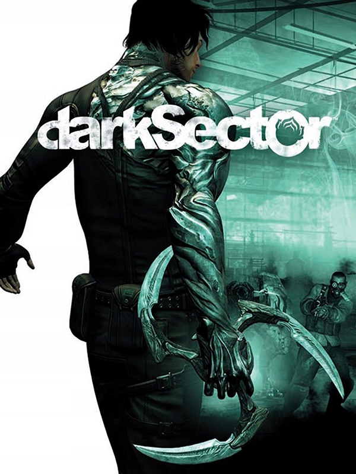

Dark Sector
Dark Sector
Detalhes
|  | |
| Tempo de jogo | Não Jogado |
| Última Atividade | Nunca |
| Adicionado | 11/02/2025 13:17:42 |
| Modificado | 11/02/2025 13:47:01 |
| Status de Conclusão | Not Played |
| Biblioteca | Steam |
| Fonte | Steam |
| Plataforma | PC (Windows) |
| Data de Lançamento | 25/03/2008 |
| Pontuação da Comunidade | 68 |
| Avaliação da crítica | 70 |
| Pontuação do Usuário | |
| Gênero | Shooter |
| Desenvolvedor | Digital Extremes Noviy Disk |
| Editor | Aspyr Media D3 Publisher ND Games Zoo Corporation |
| Funções | Multiplayer Single Player |
| Links | Wikipedia Steam Official Twitch |
| Tag | |
Descrição
Dark Sector coloca os jogadores no papel de Hayden Tenno, um agente secreto enviado para uma perigosa missão em Lasria, uma cidade da Europa Oriental à beira da ruína, que esconde um segredo mortal da Guerra Fria. No meio desta missão, Hayden é atacado por um inimigo desconhecido e infectado pelo vírus Technocyte, uma arma biológica brutal que transforma suas vítimas em máquinas mortíferas impiedosas. Sobrevivendo a este ataque, Hayden descobre que o vírus Technocyte deu-lhe poderosas habilidades sobre-humanas, diferente de tudo que ele já tenha visto. Agora, ele deve evoluir com seus poderes, sobreviver e se tornar um herói.
- Jogo de tiro totalmente novo e original - Por todo o decorrer do jogo, jogadores irão testemunhar a transformação de Hayden em algo diferente do que ele era conforme luta contra o vírus Technocyte tomando controle de seu corpo e os efeitos que surtem em sua personalidade.
- Evolução de poderes - Hayden ganha poderes sobre-humanos - incluindo a afiada e mortal glaive, que pode ser crescida (a partir) de seu braço para ser usada e arremessada com precisão fatal. Hayden se desenvolverá com estes poderes à medida que eles evoluem e se tornam mais poderosos com o passar do jogo.
- Experiência cinematográfica e imersiva - Com a ausência da interface de usuário (HUD), controles intuitivos e uma perspectiva em terceira pessoa, sobre os ombros, mostra que tudo em Dark Sector é projetado com a finalidade de manter o jogador imerso no jogo.
- Componente inovador de jogo em grupo - Dark Sector conta com uma inovadora e emocionante jogabilidade em grupo que permitirá que os jogadores usem as habilidades aprendidas no jogo individual para se sobressaírem em um ambiente competitivo.